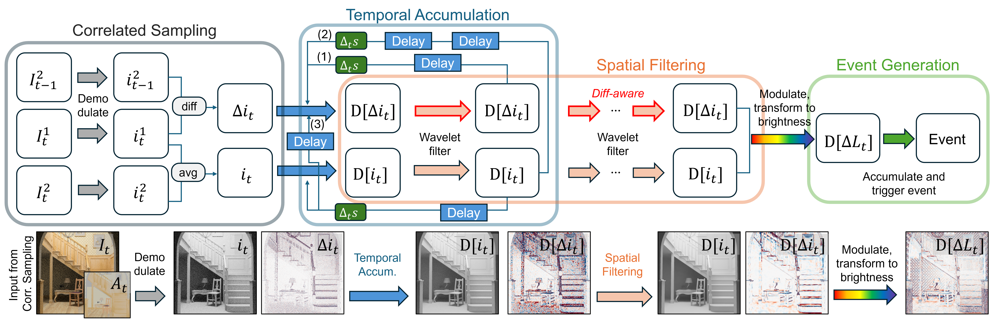

We present EventSVGF, an event camera rendering framework based on spatiotemporal variance-guided filtering (SVGF), designed to achieve high temporal accuracy especially in high-frequency regions, which is critical for faithful event simulation. Unlike conventional rendering, event cameras measure temporal changes in brightness (log-intensity), requiring accurate estimation of per-pixel, frame-to-frame differences. However, naively computing temporal differences from primal-domain RGB images leads to severe noise, as existing denoising methods are designed for primal signals rather than their differences. Our key contribution is a method that directly denoises the pixel-wise temporal difference signal using correlated sampling, formulated as a difference-aware extension of the SVGF pipeline, termed EventSVGF. EventSVGF incorporates a novel edge-stopping function, an adapted temporal accumulation scheme, and an albedo demodulation strategy, all tailored for accurate event camera simulation. Our method achieves stable results at low sampling rates (2 spp), whereas existing approaches typically require significantly higher sampling budgets (32--512 spp). We demonstrate EventSVGF on dynamic scenes, showing improved accuracy and high-frequency temporal stability in event simulation compared to prior works.

EventSVGF reuses random seeds across consecutive frames to estimate intensity and temporal differences, with albedo demodulation to preserve texture details. Both signals undergo temporal accumulation and spatial filtering, using difference-aware weights to preserve edges across frames. Finally, the denoised signals are combined to reconstruct log-brightness changes and generate events, producing stable results at just 2 samples per pixel.
Columns compare five rendering methods with ground truth (GT); rows vary the event threshold C. EventSVGF suppresses noise-induced events while preserving scene structure, more closely matching the ground truth across thresholds.
Columns compare five rendering methods with ground truth (GT); rows vary the event threshold C. EventSVGF suppresses noise-induced events while preserving scene structure, more closely matching the ground truth across thresholds.
@inproceedings{kim2026difference,
title={Difference-aware Filtering for Event Camera Simulation},
author={Kim, Juhyeon and Jarosz, Wojciech and Pediredla, Adithya},
booktitle={Computer graphics forum},
year={2026},
organization={Wiley Online Library}
}